I was not there. I want that written down first, because the boy's account of the wreck is the opening of this book and it is the one part of it I cannot check.
I was at Chupka, in the second month of the year, with four men, two boats and a debt that was not mine, buying iron off the coast people before the ice went out. I heard about the ship in the ordinary way. Men came down the shore with a story and no cargo, and a story with no cargo behind it is usually a lie, so I paid it no attention until the third telling, when somebody said the boys' name and I remembered his father.
Menandros had owed me money for six years and I had long ago written it off in the way a man writes off weather. But I knew the name of the house, and I knew the boy existed, and I knew that a warehouse in Naniwa with two men in it and a storehouse full of goods was a thing that could be taken apart in a week by anybody with a writ.
So I went down the coast to look. Not for charity. I had a company to feed, and a company of four men and a boat can always use a boy who can count.
What follows is five years. I have the ledger open in front of me as I write, and the dates in it are the ledger's dates. Where I am writing from memory I have said so, because a caravan master's memory is like a boat: reliable about the shape of things, and not to be trusted about distance.
The salvage winter
The iron was the first money. It is not a story, it is arithmetic, and the arithmetic is worth setting down because everything after it depended on it.
A ship that comes ashore in winter comes ashore in pieces. The hull is nothing. The cargo is something, if you can get to it before the sea does, and the sea is faster than men with a sledge. What he had was a wreck in the shallows, no crew, no charter, no claim that a court would have recognised, and eleven weeks of cold weather.
We cut the wreck apart and carried it up the beach in sections. The cordage, the sailcloth, the twelve hundredweight of copper fittings, the anchors, and the iron — two hundred and six bars of it, in the bottom, under everything, which was why it had not been stolen before we got there.
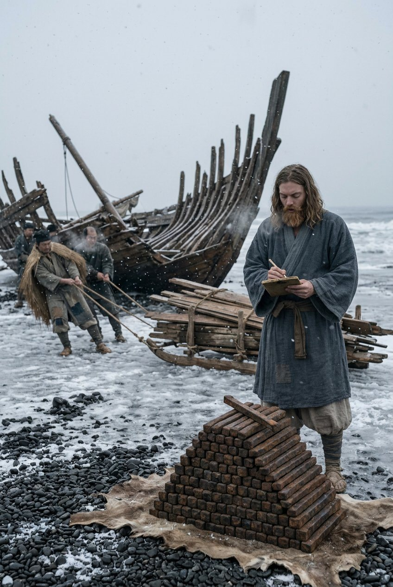
Two hundred and six bars. It does not sound like a beginning, and it was not one. It was a purchase. What made it a beginning was that he paid the coast people in iron instead of coin, at a rate they accepted, in a season when nobody had coin to spare. That is not luck. That is a man who had understood, at sixteen, in eleven weeks, the only thing about trade that cannot be taught: what a thing is worth to the man in front of you, today, in this weather.
He was not generous and he was not clever about it. He was simply exact. He knew to the bar what the house needed and what it could spare, and he kept the two in separate columns, and when the coast people came back in the third week for more he had already thought about what he would say.
The men who came for the iron did not leave. That is how a company begins: not by a name, but by four men who have seen one winter out with somebody and cannot see a reason to stop.
We named it in the spring, in Greek, in front of people who could not read a letter of it. He said the three words and then he said them again, slowly, because he wanted us to be able to say them, badly, in our own mouths. The Distinguished Host. I have heard soldiers laugh at that name for eleven years. I have never once heard a man refuse to answer to it.
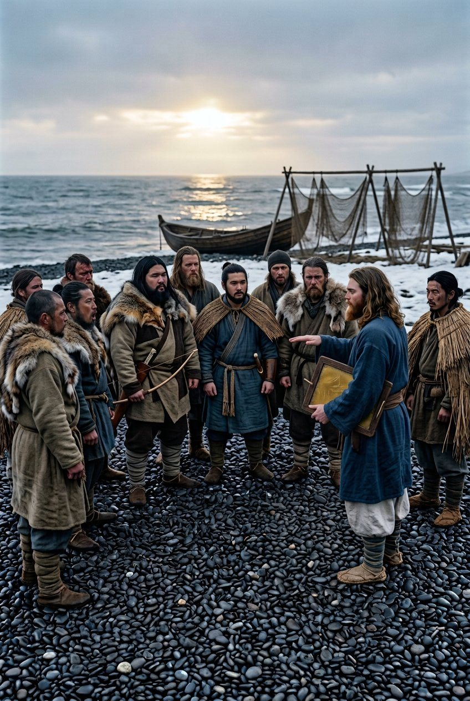
The roads south
We walked. That is the whole of it and it took most of the year. A company with a chest and eleven men and no horses walks, and eats, and the eating is the business.
I will not describe the roads. A road is worth describing once in a life, and I have spent mine on them; the reader has the maps and the maps are honest. What is worth describing is what a company becomes on a road.
It becomes a thing that must be fed twice a day. Everything else about it is decoration: the name, the banner, the oath. Food is the fact. A caravan master counts in days of food the way a monk counts in prayers.
The boy counted in something else. He counted in the ledger, and the ledger said we were eating the profit, and he was right, and for eight weeks it did not matter to him at all — which is the first time I understood that he was not in this for the money.
The bridge was out above the second pass, which in that country means a bridge is out until somebody in a provincial office decides it is not. Six days we waited. On the fourth day the fever came through the camp, and by the sixth there were three men down and one of them was not going to get up.
There was a physician at the post station. He was forty-four years old, he had a chest complaint of his own, and he wanted nothing to do with eleven foreigners and one dying man. He came anyway. I have never found out why, and I have asked him twice.
He charged nothing. That was the strange part. He worked two nights and saved the man, and when the boy offered him silver he put his hands behind his back like a man being offered something indecent.
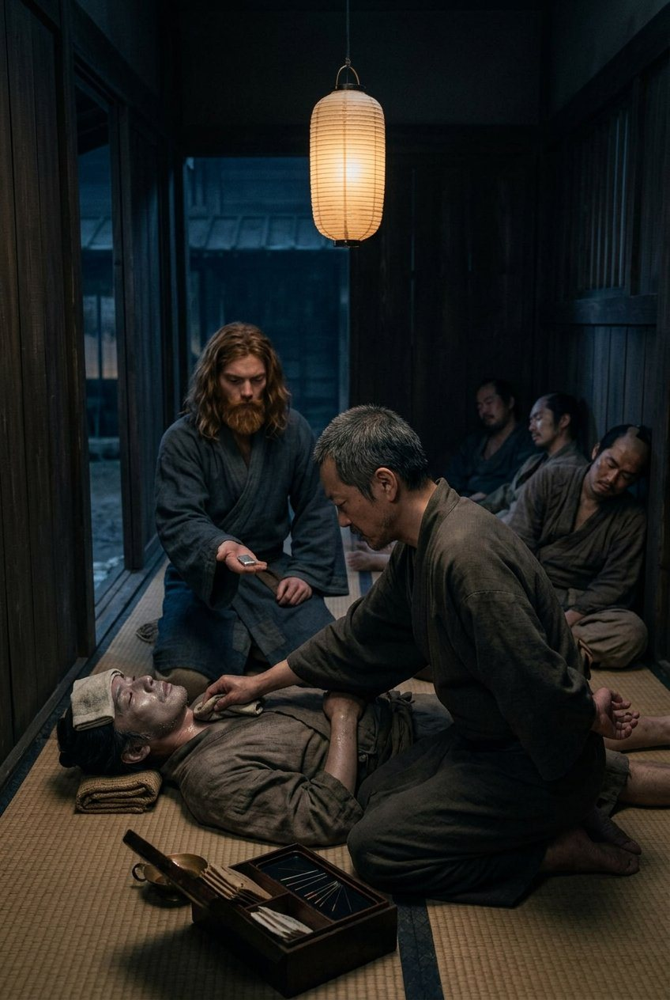
What he wanted was a debt collected. There was a clerk at the provincial office who had been holding back a payment owed to him for a year, and the physician had neither the rank nor the temper to get it. The boy went up the hill with the ledger and came back three days later with the money and one sentence from the governor's inspection, which he had deployed like a knife and then put away.
The physician joined us in the seventh month. He has been with us ever since. He is not a sentimental man and he does not like being called a follower; in his own view he is a creditor who has taken to travelling with the family of his debtor, which is the most Japanese sentence I have ever heard anybody say about anything.
Naniwa we did not enter. There is a version of this chapter in which the boy goes into his father's house and stands in the room where the chest used to be, and I have been asked for it more than once, and it did not happen.
What happened is that I went. He sent me, with the ledger, and a letter, and the exact sum of eleven years of interest calculated to the day, and he stayed outside the city wall at an inn where a man is not asked his business. I paid the debt to a factor, who signed for it, and I paid the factor's fee, which was more than the debt.
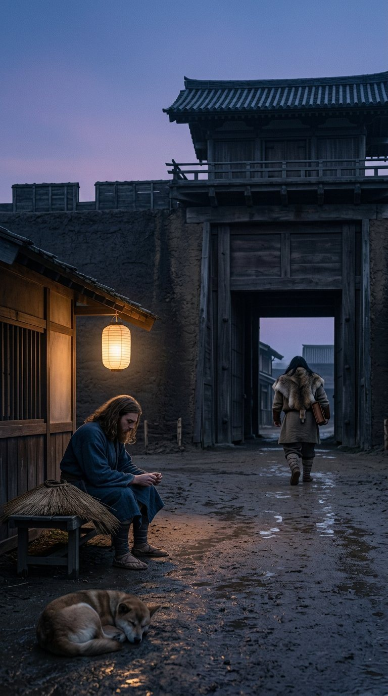
I asked him, on the road back, why he had not gone himself. He said the house was not his to enter until he could enter it as something. I said he was something; he had eleven men. He said that eleven men is not something a house can be shown.
I have thought about that for years. It was the first time I heard him say a thing that was Greek and not merely clever.
I will put down the other thing here, because it belongs to the roads and not to the sea. Somewhere south of the second pass, in the third month, I asked him what he thought he was doing, and he said he was going to Macedonia.
I asked him whether he knew where that was. He said yes, and then he described it: not as a place on a map, but as a road. West of this, past the mountains, past the last of the cities, through the country where the horses are, to the sea that has a name he said in Greek and I have never been able to remember.
I did not laugh at him, and I want to be clear that this was not restraint. I had spent twenty years hearing men describe places they would never see. But those men were describing something behind them. He was describing something in front, and he had the money to move, and he was moving.
That is the whole of what I have to say about it. If you want to know whether he was mad — I have been with him eleven years, across three countries and two seas, and I have never once seen him lose an argument with a man about money.
The island
Hakata in the tenth month. It is the last harbour where the signs are in a script we could read, and the last place where the boy could walk into a customs house and be a person with a family and a registration.
I watched him on the last morning, on the quay, reading the board outside the harbour office. He read it twice. Then he took out the ledger and wrote something in it, standing up, with his foot on a bollard, and closed it, and got on the boat.
I asked him later what he had written. He said the date, and the name of the harbour, and the words: here I stop being able to read the signs.
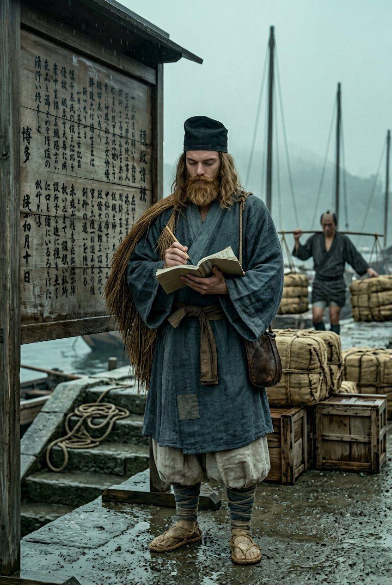
The boat was not ours. It belonged to two Emishi who had come down the coast in it and were going west because a man in Hakata had told them there was work on an island and they had no reason to doubt him. They knew they would not come back. I do not know how they knew. They were not sad about it; they were like men going to a fair.
One of them had been to the island before. He sat at the front with his harpoon across his knees and did not speak for two days, and then at dawn on the third day he said, in his own language, that the crossing is not the hard part, and after that he was a different man entirely and talked until we landed.
It took nine days. I have the winds in the ledger. Nobody was sick after the second day, which I am told is unusual, and I put it down to the fact that we were too frightened of the two Emishi to be sick in front of them.
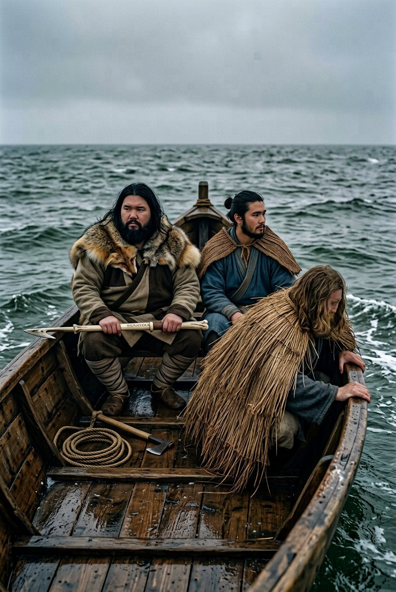
Seotamna is an island south of the peninsula, and it pays tribute to whoever is nearest, which in that year meant two kingdoms at once and neither of them near enough to collect in person. That is the whole of its politics and most of its business.
It takes work from anybody who can pay. That is not a figure of speech. A company arriving with coin and no letters of introduction is, on that island, a company with the only qualification required.
We carried salt for a man who owned four boats, and then we carried a debt for the same man, which was more profitable and worse for us, and by the eleventh month we were doing both for two men who hated each other and did not know we were doing it for the other, which is a position a caravan master should refuse and never does.
The contract finished in the third month of the following year. I wrote the final entry myself. Eleven men, four months, one hundred and forty days of food, and at the bottom the sum, which I will not put in this book; but I will put the other figure, because it is the one that mattered: the company's name was known in a harbour that had never heard of Japan.
The names. He said the names on the beach at Seotamna, on the first day of the new year, in the Greek that none of us could follow, in front of eleven men who stood in a half-circle and did not know what they were watching.
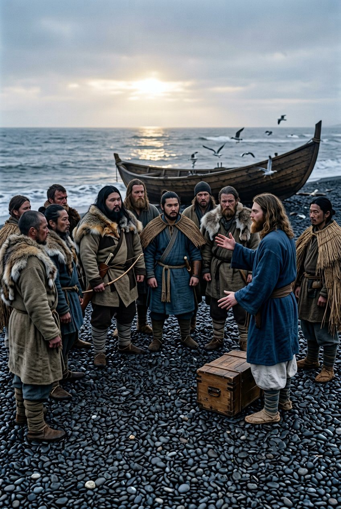
I asked him afterwards what it was. He said it was a debt and then he corrected himself and said it was not a debt, it was a charge, and there was a difference which he would explain when my Greek was better. My Greek was never better.
But I saw the thing itself, and I will put it down plainly: an obligation that could be discharged by other people standing there. That is the strangest thing I have carried in eleven years, and I have carried a chest through three countries without once asking what was in it.
The northern winter
The contract came in the spring, and it was too good. I want that on the record. It was too good, I knew it was too good, and I took it.
A man in Seotamna with a warehouse and no ships wanted goods moved to the cold coast in the north, on the far side of the straits, before the season turned. The price was three times what the work was worth. He would not say why. He did not have to. When a price is three times the work, the extra is for the risk, and the risk is the part he is not telling you.
The boy asked me whether we should take it. I said no. Then I worked out what the winter would cost us sitting still, and what the men would do in a winter with no work and money in their pockets, and I went back and said yes.
We sailed north in the sixth month. Do not ask me why a man sails north in the sixth month with a cargo of somebody else's goods. The answer is that the money was in the north and the weather was in the south, and a caravan master who waits for good weather has a company that starves politely.
It was the same sea in the wrong direction. I had crossed it going west eleven months before, with the two Emishi and a fair wind. Going back east, in the same water, in a worse boat, with a cargo that belonged to a man I did not like, is the single worst month of my working life, and I include the year the horses died.
Kushiro. The eastern coast of the northern island, where the sea is grey and the people are Emishi but not our Emishi, and the words are wrong in ways I could not name at first and can name now.
Shiina was happy. That surprised me. Shiina talks to everybody and is at his ease everywhere, but in Kushiro he stopped performing. He was on ground his grandmother's people had come from, and it made him quieter and slower and better at his work.
I was not happy. I have been in a great many places and belonged to none of them, which is a comfortable way to live; but I had never before stood in a place that was almost mine and felt the difference. The coast people were courteous and treated me as a foreigner. In my own country.
The boy was the only one of us who was entirely at ease, and the reason is that he had always been a foreigner, and had stopped minding.
The winter was eleven weeks. He spent it on the third scroll — the one that is not the genealogy and not the rite, the commonplace book, which he had never read properly because he had never had eleven weeks.
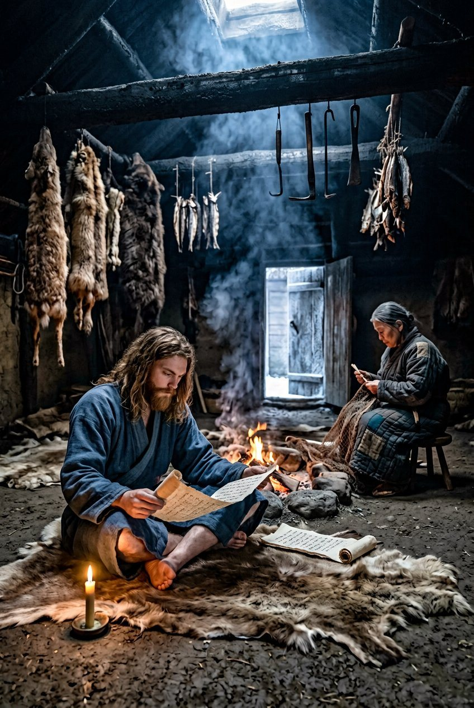
I do not know what is in it. I know what it did. He came out of that winter with the thing he had been missing since the beach, which was not courage and not money: it was a precedent. Other men had done this. The argument was not his own invention.
In the second month he called the company together and said the thing that everybody knew. East was a detour. It had been paid for, it had been necessary, and it was a detour. He did not apologise and he did not dwell.
Then he said we were going west in the spring, whatever it cost, and that he would not ask anybody who did not want to come.
Nobody left. I have thought about that since, because two of them had good reasons to. I think they stayed because he had told them the truth in one sentence and had not dressed it up, and men will follow a man who tells them unpleasant things once.
The long way round
We sailed in the fourth month, on a ship belonging to a family from the mainland who had come north for furs and were going home, and who took us for the price of our own food and a bond I signed in a hand that was not my best.
The crossing took eleven days. On the seventh we saw the mainland — a grey line under a grey sky, and everybody on that boat looked at it for a long time without saying anything, because none of us had seen a coast that none of us had ever stood on.
Parhae. The shore is flat there and the wind comes off the land and smells of pine and smoke.
I will say what it is, because it took me a year to understand it: it was the first ground in four generations of that family that was not Japan, not Korea and not an island. I did not feel anything standing on it. He did. He stood on the shingle with his boots in the water and looked west, which was the direction we were going, and he was, for the first time since I had known him, in a good mood.
Down the coast after that, south, with the sea on our left. It is slow country. The harbours are small and the men who run them are suspicious of everybody and completely correct about it.
We came down through the Silla country in a bad year. The kingdom was arguing with itself, and a kingdom arguing with itself is good for a caravan and bad for a caravan's goods. We paid three tolls in one week to three men who each claimed the same road, and the third one was the only one who gave us a receipt.
Then the turn. At the fourth month's end we left the coast and went west, inland, and that was the end of the sea for four years.
I have written the steppe down in one entry and I am going to keep it that way, because we spent most of a year crossing it and nothing happened.
Nothing happening is not the same as nothing to say. There is a kind of country where the days are all the same shape and the food is the same and the men stop talking because there is nothing to say that has not been said, and a company goes through it like a stone through water. We crossed the edge of the Khitan country and paid a toll to men who had never seen a Greek and did not care, and we came out the other side in the autumn with all our goods and one man with a bad foot.
I said at the start that a caravan master's memory is not to be trusted about distance. I do not know how far that was. I know it was the emptiest country I have ever been through and that I have no story from it, which is the honest account of most of anybody's life.
Tang. There is no way to write about arriving in Tang from the north without sounding like a man describing his first city, so I will not try to be clever about it. It was the biggest thing I had ever seen and it made the company small, and I liked it for that.
Customs at the frontier. Registers. A clerk who asked what we were and had, in his book, four possible answers, none of which was us. He chose the fourth, which meant a company of foreign merchants under the protection of the garrison, and it cost us a fee and got us a document I still have.
Youzhou in the autumn. Horses, soldiers, money moving through a town that was mostly a market with a wall round it. We sold the fur and bought tea, and made a profit that was almost exactly the size of the fee at the frontier, which is how it goes.
Then west, to the furthest point we ever reached, and I will not name it because it is not worth naming: a river town with a market and a garrison and a road going somewhere else. He wanted to keep going. I said the money was behind us and we turned.
The turn is the part people ask about, so I will be exact. It was not fear. Nobody was chasing us and no road was closed.
It was a price. There were contracts on the rivers — salt, and tea, and grain — and a man in Youzhou had told us what they paid, and a company with a ledger goes where the contracts are, however far back east that is.
Down the Huang He first, with the grain boats, east and downstream, because a reversal is easier to bear when the water is doing the work. The canal head at the end of it was the busiest place I have ever stood in: barges, taxes, men in uniform, and a river of money going north in sacks.
Salt is the business there. The state holds it and everybody else works round it, and working round it needs men who can count and keep quiet, which is a fair description of my company.
Tea, which two generations ago was a medicine and is now a habit that nobody can tax twice. Grain, moving up a canal older than any story we tell, and in worse repair than our ledgers.
We worked the rivers for more than a year. I will give it the space it deserves, which is little: it was the best-paid and least interesting work of my life. We were useful to other men's merchants. We carried for four houses and cheated none of them and were cheated by one, and I still think about the one.
The thing that came out of it was not money. It was that the company's name was known at the canal head and in two river ports I had never heard of, by warehouse clerks who had never seen any of us.
I have been in this trade a long time. A name is worth more than a cargo, and it takes four years to make one and one bad contract to lose it.
Then the way back, which is the part I remember. West and upstream on the Yangtze, slow, shallow water, portages where the whole company carried the boat, and a chain of markets that had never heard of Parhae and did not care where Japan was.
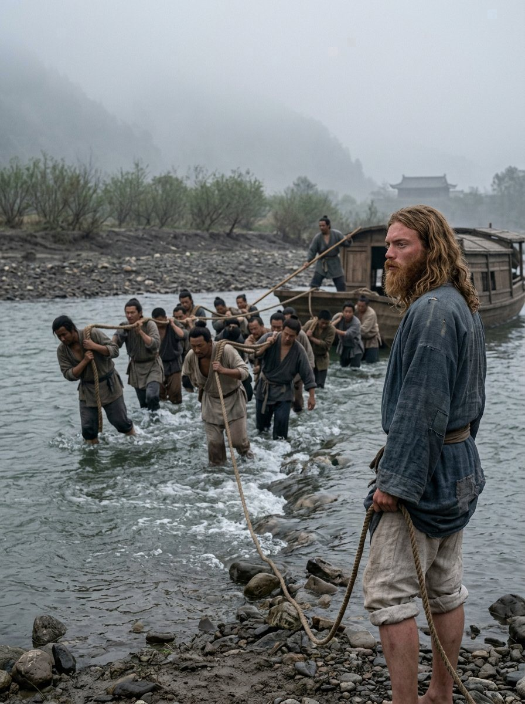
Upstream is where he stopped being a curiosity and became an asset. Downstream nobody asks a foreigner anything. Upstream, four hundred miles from the sea, in a town where nobody had ever seen a man with that face, he was worth listening to for an hour, and he talked, and the talking got us a contract.
We came north at the end of it on the Han river, which is the road any merchant takes when he is going to Chang'an with money, and we came into the capital in the first month of the year with the ice going out.
Chang'an. Four years after the beach, and this was the city in the father's leaves: the place the old scroll said the family had served in, generations before, when the log switched alphabets.
I expected something. I had been hearing about this city since the second month of our acquaintance. He was quiet for two days, and then he went and stood at the wall and looked at it, and came back and wrote in the ledger for an hour, and never told me what he wrote.
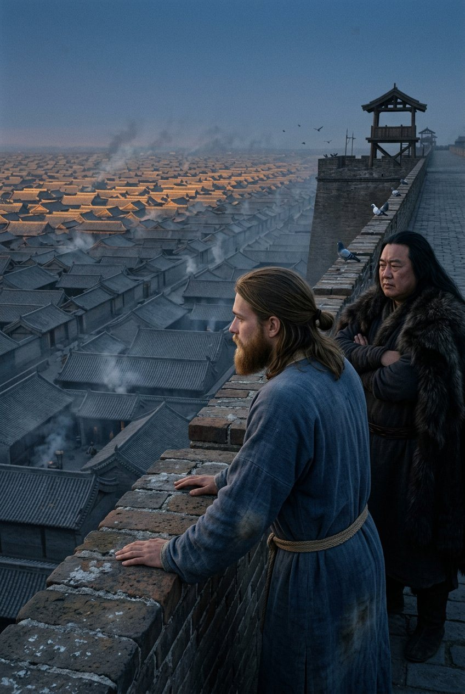
What he said that night, over food, was this: that a man who has spent four years being paid is a professional, and professionals do not arrive anywhere, they are employed there. I did not understand it then. I understand it now, and I think it was the most honest thing he ever said about himself.
The school
We did not leave for the west in the spring, as he had said at Kushiro. We went south instead, and it took us four months, and I did not learn why until we were there.
Guiyang is a month beyond the Yangtze and two beyond the capital, in the south-west, where the country is green and wet and the roads are bad in a way I had not seen before. There was a school there. Not a garrison school and not a temple: a place where men who had passed examinations taught men who intended to pass them, and argued about what they had read.
He had written to them from the canal head, a year before, without telling me. They had written back. A man with money, four languages and a chest of books that nobody in the province had ever seen the like of is not a student; he is an acquisition. He paid for two years of teaching and they took him.
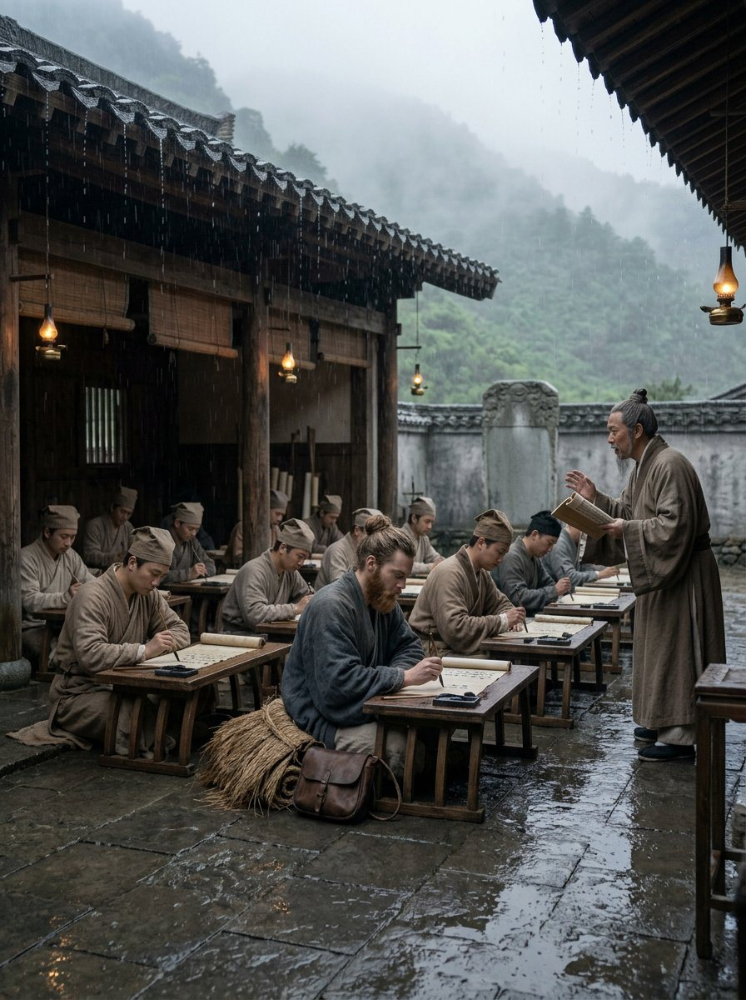
I will not pretend to understand what he learned. I have the ledger and I know what it cost, and I know that he was there for two years and that for most of it he was the only foreigner in a room of thirty men.
But I know what it did to him, because I was with him every day. It gave him the argument. He had the books already — they came out of the chest, and out of that winter at Kushiro — but a book argues with nobody. In that school there were men who had read the commentaries and would not accept his reading of anything without a fight, and they fought him for two years, and they paid him the compliment of doing it properly.
He came out of it able to hold a sentence in three languages at once and knowing exactly which one would win an argument with a customs clerk in a bad year. That is not learning. That is a weapon, and he had been carrying a blunt version of it since he was sixteen.
What he did not find was a Greek. Not in the markets, not in the library of that school, not among the teachers and not in the letters he sent to the coast looking for one. He had come four thousand miles and the family's own country was still a rumour that he was carrying in a leather tube.
I asked him, in the last month, whether it had been worth two years.
He said that for the first time in his life he had been in a place where nobody wanted anything from the chest. And then he said the other thing, which I have thought about more: that he had spent two years learning to think in a language that had never heard of Alexander, and that this had made him better at being Greek, not worse.
I do not know what that means. I am putting it down as he said it.
We left China in the fifth month. The company was eleven years old, and so was the ledger, and the man was twenty-one.
There were fourteen of us at the gate. Three of the eleven who had walked south out of the snow had died or gone home, and four had joined, and the two Emishi were still with us, and the physician was with us, and the chest was with us, roped on a cart with the money hidden in the salt.
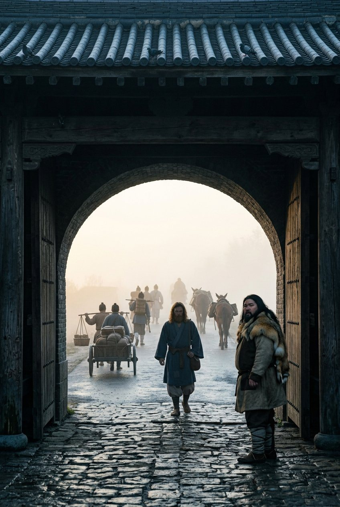
He did not look back at the wall. I looked back at it, because I am a caravan master and I like to know what I am leaving, and I have thought since that a man who does not look back is either finished with a place or has never belonged to it.
The road west. That is where this chapter stops, and it stops there because the next five years are a different book, and because the man who writes that one will not be me.